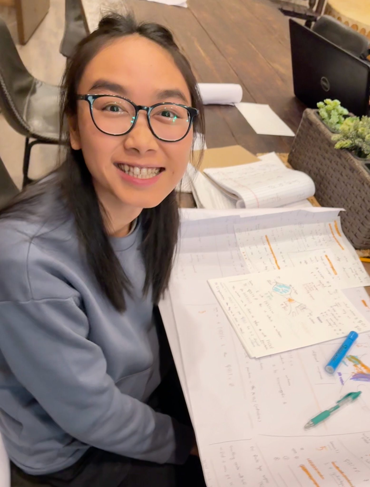

ABOUT ME
I am an Assistant Professor of Practice in the Department of Mathematics at Purdue University in Indianapolis.
My research is in hyperbolic geometry and low-dimensional topology. I am particularly interested in curves on surfaces.
Background
- Postdoc, Arizona State University, USA
- Ph.D., University of Luxembourg, Luxembourg (Advisor: Hugo Parlier)
- M.Sc., Nantes University, France
- B.Sc., Vietnam National University, Vietnam

CONTACT
Office: ET 314F (Science, Engineering & Technology)
Purdue University in Indianapolis
vo84 - at - purdue.edu